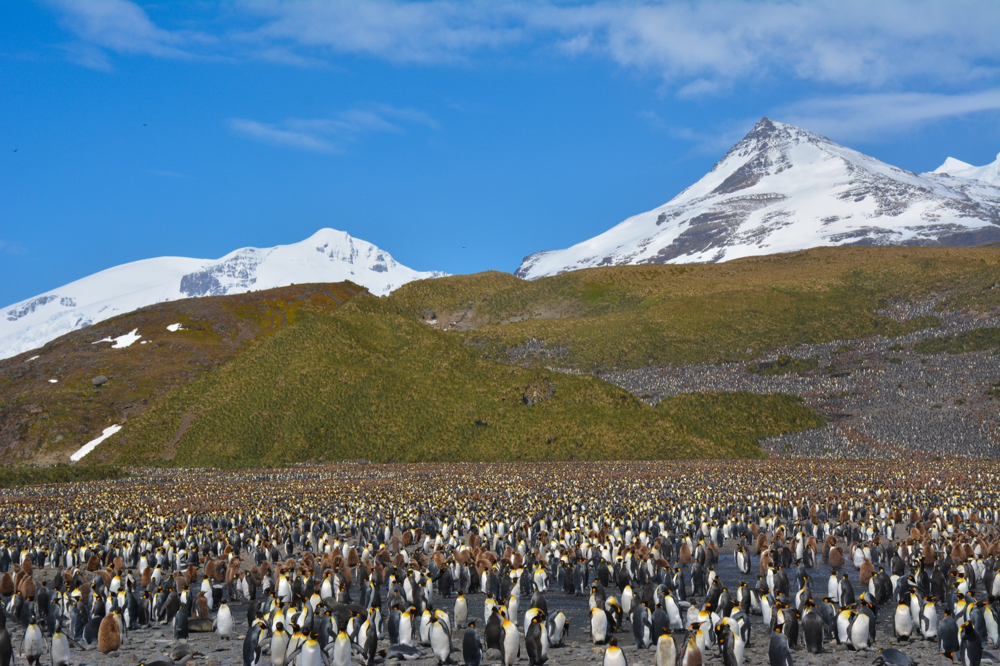

Students
Free films, visits from real explorers, and projects they run themselves.

We're a new nonprofit using great wildlife storytelling to connect people with nature, and turning that connection into action.
Follow the Wild inspires people to fall in love with the wild, and turns that connection into exploration, discovery and real conservation impact.
A generation, and a public alongside them, that knows the wild, feels connected to it, and acts to protect it.
Young people spend more time on screens and less time outside than any generation before. Many worry about the planet and feel they can't do anything about it.
The best wildlife education sits with well-funded schools and institutions. Most kids never get near it.
The most powerful wildlife films live on entertainment platforms. Viewers, teachers and partners have no easy way to act on what they see.
People protect what they feel connected to.
Every program we run builds that connection, then gives it somewhere to go.
Free films, visits from real explorers, and projects they run themselves.
Ready-to-teach, standards-aligned lessons and kits at no cost.
Weekend challenges, wildlife spotting, and stories to watch together.
A cause worth championing, and a team that brings their audience along.
Real conservation impact their customers can see and take part in.
Clear outcomes, and support passed on to frontline conservation groups.
We'll report on outcomes in every pillar, not just activity.
Follow the Wild is its own nonprofit, with an independent board and its own finances.
Our films, lessons and challenges are free for students, teachers and families.
A small team plus volunteer explorers and ambassadors, so more of every dollar reaches programs.